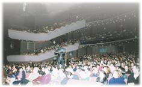
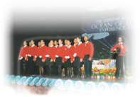

| Reportages spéciaux |
|
|

Le 27 avril 2000, répondant au désir intense de nombreuses âmes sincères, notre Maître bien-aimée a finalement honoré la Terre des grands nuages blancs, la Nouvelle Zélande.
(Note : Les Maoris, les natifs de Nouvelle Zélande, appellent leur pays Aotearoa, qui veut dire "la Terre des grands nuages blancs".)
La conférence s'est déroulée au centre Aotea à Auckland, lieu très réputé en Nouvelle Zélande pour des concerts et des conférences internationales. L'immense scène avait été merveilleusement bien décorée par les amis pratiquants. Le décor de fond représentait un ciel bleu avec des nuages blancs. Le bord de la scène ressemblait à des vagues en mouvement sur une mer bleue. Les montagnes et les arbres verdoyants sur la scène créaient une atmosphère chaleureuse et un sentiment de nature, tandis que le lever du soleil lumineux au milieu s'accordait parfaitement avec le rayonnement infini de notre charmante Maître.
Le programme de la conférence à Auckland a commencé vers 19 heures. Le public occupait plusieurs milliers de sièges attendant avec impatience Maître Suprême Ching Hai qui allait leur donner des informations sur la manière d'expérimenter le royaume divin des cieux. Ce soir-là, Maître portait un impressionnant ensemble à manches courtes avec une jupe serrée rose pâle décorée de minuscules fleurs bleues et violettes. Elle avait deux petites nattes qui lui donnaient un air encore plus magnifique, ravissant et plein de dignité.
Un groupe de personnes Maori célèbre une cérémonie traditionnelle Powhiri pour accueillir Maître en Nouvelle Zélande. |
Pour le peuple Maori un Powhiri dépeint un style de vivre. Au niveau physique, la présence physique de l'être accueilli est reconnue. Dans cette reconnaissance, on fait référence à l'essence, dans sa dimension spirituelle, de ceux qui sont morts au cours de l'année, du mois, de la semaine ou du jour (cela dépend de la personne accueillie) et en particulier des Manuhiri Tuarangi (ceux qui ont traversé les mers). On fait également référence à l'essence des rivières et des montagnes, qui se joint à l'essence de ces Tanganawhenua (les indigènes de Nouvelle Zélande) qui ont trépassé. La présence physique de la personne accueillie est une représentation visuelle des dimensions physique et mentale.
Un "Kaumatua", le Chef Maori, a souhaité à Maître la bienvenue sur nos côtes, remerciant le Créateur pour la tranquillité de Son voyage, alors que verbalement il rassemblait tous les différents aspects du Powhiri. Pour cette occasion le Kaumatua était aussi le chef spirituel des Maori. Puis il L'a remerciée pour le travail formidable qu'Elle accomplissait pour le bien de tous les peuples. Il a déclaré qu'en tant que Tanganatawhenua nous avions une responsabilité indue à notre peuple, à Manaaki (embrasser et accueillir Maître avec toute la révérence qu'Elle mérite), et il finit son discours en appelant le Créateur et les anges sacrés à La bénir, Elle et Son séjour en Nouvelle Zélande, et à continuer de La soutenir dans son voyage.
 |
Le Powhiri était mené par le Kamatua (première personne à droite) avec Naida Glavish (première personne à gauche) comme interprète. |
Maître a été très touchée par ce rituel et a exprimé : " La cérémonie et les chants de bienvenue touchent le coeur des gens. " Elle a aussi ajouté qu'Elle pouvait sentir la forte tradition spirituelle des Maoris. Une soeur Maori nouvellement initiée nous a confirmé plus tard les paroles de Maître en nous disant : " Les Maoris vivent une vie traditionnelle accentuant plus les aspects spirituels que matériels. La race des Maoris est comme un géant assoupi à moitié éveillé attendant quelqu'un pour le réveiller. " Elle croit profondément que Maître Suprême Ching Hai est la Sainte qui est venue réveiller le géant à la lumière.
 D'après les mots de l'interprète Naida Glavish, " Maître est très dynamique et sans préjugé. Elle détient et reflète la Vérité, ce qui manque dans ce monde. Elle n'a pas peur, Elle est extrêmement sensible et Elle a élevé l'aura spirituelle du Powhiri. Elle a une énergie féminine puissante qui n'attaque pas l'énergie masculine pour asseoir son pouvoir ".Plus tard le Kamatua qui a accueilli Maître a déclaré qu'il se sentait très honoré d'être en sa présence.
nbsp; Suivant le Powhiri, Maître est entrée dans la salle à la surprise du public néo-zélandaise, et Elle a descendu tranquillement l'allée centrale, et d'un air doux Elle répondit aux bras tendus qui l'accueillaient par un sourire plein d'amour et de beauté.
 Une fois Maître installée devant la scène, le Groupe Culturel de Saint Peter a commençé une représentation en l'honneur de Maître, ce qu'Elle regarda avec grand intérêt, souriant avec amour alors que les trois danses Maori étaient exécutées. La première concernait l'union du masculin et du féminin, la seconde la jeunesse qui prend conscience de la sagesse de leurs aînés, alors que la troisième représentait la jeune génération reconnaissant la langue Maori comme "taonga" (héritage ou trésor) qui est transmis verbalement de génération en génération depuis leurs ancêtres et qui vaut la peine d'être sauvegardée. Maître a alors été invitée sur la scène, d'où Elle a salué le public néo-zélandais d'un salut traditionnel Maori, "Tena Koutou",(je vous salue tous) et puis Elle a remercié tout le monde de L'avoir accueillie en Nouvelle Zélande.
Dans Son discours, Maître a dit : " Je pense que vous savez pourquoi vous êtes là. Tout le monde veut savoir qui est Dieu et d'où nous venons, et c'est la raison pour laquelle nous sommes venus sur cette planète. A ce moment nous sommes reliés avec le ciel et les planètes spirituelles, mais parce que nous avons oublié ce lien, la plupart d'entre nous ne reconnaît que la vie physique. En fait, nous ne sommes pas que des humains ; nous sommes des être hautement développés. Comme les chants traditionnels Maori que nous venons juste d'entendre - ces chansons sont spirituellement développées, et hautement élevées, parce que les ancêtres des Maori connaissaient un monde différent, un monde spirituel. Nous pouvons nous le remémorer, parce que ce que nous avons déjà acquis nous ne pouvons le perdre. "
Maître a continué en donnant un exemple. Chacun d'entre nous est une personne complète, pas seulement un orteil, un doigt ou un front. De même si nous nous rappelons seulement que nous sommes un être physique, alors nous ne sommes pas des êtres complets. Elle a ajouté qu'Elle était là par la volonté de Dieu pour que nous puissions nous rappeler notre être tout entier. C'est exactement comme si nous ne pensions plus qu'à ce doigt tout le temps, comme si nous nous oublions nous-même parce que nous aimons tellement cette bague ( Maître montre Sa bague) et que nous ne cessons de l'admirer. En fait la richesse spirituelle est toujours là, mais c'est juste que nous sommes si occupés à regarder à l'extérieur et que nous nous souvenons uniquement de notre être physique, alors nous oublions les autres 99% de notre être qui sont plus élevés, plus grands, plus puissants, plus magnifiques, plus merveilleux, plus saints, plus beaux, heureux, bénis et sereins.
Maître a continué en disant que nous sommes les temples de Dieu, mais que nous avons oublié nos qualités divines. C'est pour cela que nous parlons d'illumination "immédiate" car c'est déjà là. C'est très simple. Maître a dit : " Vous êtes déjà divin. Je suis simplement là pour vous le rappeler. Dieu vit à l'intérieur de vous. Alors, vous êtes Dieu. Sinon qui est Dieu ? Par conséquent, peu importe ce que les gens choisissent de faire, ne les jugez pas. Ils choisissent une voie différente pour connaître Dieu. Un jour, ils sauront qu'ils sont Dieu à leur manière. "
Finalement, Maître a expliqué qu'Elle peut nous aider seulement si nous sommes prêts. Sinon, personne ne peut rien faire. Alors, Maître a demandé à l'auditoire s'il voulait ou non expérimenter le divin. Tous ont répondu sincèrement : " Oui ! " Maître a ensuite enseigné la Méthode pratique et de nombreuses personnes ont eu des visions de Lumière intérieure ou du soleil et ont ainsi expérimenté un avant-goût de la communication avec Dieu.
Maître a ensuite répondu à toutes sorte de questions, conseillant à une personne qui hésitait encore à observer les cinq préceptes que Dieu est la première des priorités ! Nous devrions nous décider à tout faire pour connaître Dieu, à vivre une vie sans tuer des êtres sensibles, vivre une vie sans voler, vivre une vie sans commettre l'adultère et vivre une vie sans mensonges, vivre une vie sans drogue ni alcool. Nous offrons l'image de l'être que nous voulons représenter. Si nous voulons nous présenter en tant qu'êtres illuminés, ceci est notre choix. Pour ce qui est du respect d'un régime végétarien, Maître a expliqué que l'énergie animale est très pesante car les animaux aiment la vie et ont peur de la mort. Elle a également dit que nos vies ne sont en fait qu'une. Lorsque nous faisons du mal à d'autres êtres sensibles, en réalité nous nous blessons nous-mêmes. Imaginez que votre doigt soit coupé, bien que nos nerfs ne soient pas blessés, il est vrai que nous nous sommes déjà fait mal.
Après la conférence, Maître a distribué Elle-même les fruits et les fleurs qui se trouvaient sur la scène au public. Tout le monde était très heureux et personne ne voulait partir. A part ceux qui devaient aller s'inscrire pour l'initiation, la plus part des gens se sont promenés dans le hall d'exposition où les objets d'art de Maître, les Vêtements et les Bijoux Célestes, les peintures, les lampes de longévité étaient exposés. La foule n'est partie que très tard.
Une soeur de Auckland a partagé l'histoire de son initiation et de son embarquement sur le chemin spirituel. Depuis qu'elle était jeune, elle se demandait : " Pourquoi venons-nous dans ce monde ? Pourquoi devons nous souffrir tant ? " Bien qu'Elle croie en Dieu, elle n'arrivait à trouver Dieu en elle ,et ne savait comment le trouver. Peu à peu, le seul chemin pour s'en sortir à été l'intoxication par la drogue et l'alcool, avec seulement l'illusion du bonheur.
A ce moment décisif de sa vie, elle a commencé à travailler pour des oeuvres sociales. Par hasard, elle a lu dans le journal un article au sujet d'une exposition spirituelle, et par la suite elle a rencontré les enseignements de Maître. " En me faufilant, j'ai pris un livret-échantillon et quelque chose s'est produit immédiatement. " Alors, elle est rentrée rapidement à la maison pour lire le livre avec attention. Bien qu'elle ait appris la Méthode pratique, elle savait que ce n'était pas assez. Elle ne pouvait pas laisser passer ce "une fois en une vie" ou "une fois en des millions d'éternité d'opportunités".
Sa vie depuis l'initiation est remplie de joie, même si en tant qu'être humain, elle doit faire face à de nombreux défis. Cependant, elle a trouvé qu'ils peuvent être facilement dépassés avec le pouvoir de la Lumière et du Son qu'elle expérimente pendant sa méditation. La Méthode Guan Yin lui a apporté une grande joie, et beaucoup d'inspiration. Elle a en général énormément d'énergie. Cela l'aide dans son travail d'oeuvres sociales. Son âme endormie a été réveillée et maintenant, elle regarde d'un oeil différent et clair.
Elle était très heureuse de partager ses merveilleuses expériences avec tout le monde, nous disant, comment nous serions honorés d'être en la présence d'un vrai Maître vivant, Maître Suprême Ching Hai qui a la clé pour nous aider à trouver la Vérité intérieure qui est notre droit de naissance.
Une soeur Maori qui a été initiée il y a juste un mois, nous a dit qu'elle a une fois regardé le livret-échantillon de Maître comme sans valeur. Mais plus tard, grâce à sa soeur aînée qui pratique la Méthode Guan Yin et qui a changé incroyablement, elle a été inspirée pour explorer à nouveau les enseignements de Maître. Ainsi elle n'a pas manqué ce trésor. Maintenant ces parents qui ont plus de 80 ans, pratiquent la Méthode pratique.
Dans l'étude des enseignements de Maître, ce qui la frappait le plus était la phrase : " Nous sommes la Lumière. Mais la vie nous attache avec les problèmes d'argent, le travail, les informations, et nous nous engluons dans ses problèmes. " Maître nous enseigne que nous devons regarder à l'intérieur pour savoir qui est le patron et ce que nous avons à faire. Les enseignements de Maître l'ont encouragée à comprendre que l'illumination est notre vraie Nature et qu'elle a toujours été là. Maître a aussi expliqué que si nous avons un moyen de la reconnaître, elle sera toujours là.
Le chose que cette soeur a par-dessus tout aimé, est que Maître sera toujours là pour nous et qu'une fois que nous sommes connectés avec Elle, nous serons toujours connectés, peu importe l'endroit où Elle se trouve dans le monde.
Les amis initiés étaient tout excités lorsqu'ils ont appris que Maître avait accepté leur invitation pour donner une conférence en Nouvelle Zélande et se sont immédiatement lancés dans un programme de préparations. Tous les pratiquants de la Nouvelle Zélande ont tiré d'immenses bienfaits de tout ce procédé qui était agréable et satisfaisant.
La majorité des amis pratiquants de la Nouvelle Zélande habitent à Auckland, dans l'Île du Nord, et quelques-uns sont répartis dans le reste du pays. Cependant pour diffuser la bonne nouvelle de la conférence de Maître à chaque coin du pays, chacun a fait de son mieux. Par exemple, une soeur habitant dans l'Île du Sud a conduit de Dunedin complètement au sud de l'île jusqu'à Christchurch totalement au nord. En conduisant, sa seule pensée était : " Quand le Seigneur vient à nouveau, l'évangile se répandra dans tous les coins du pays. " Dans certaines petites villes reculées de l'Île du Sud, elle a laissé quelques prospectus. Quand elle a vu que les propriétaires des boutiques prenaient des prospectus et les lisaient attentivement, elle a été très touchée. Plusieurs amis initiés vivant à Taranaki, au sud de l'Île du Nord ont aussi conduit du sud au nord, semant des graines Guan Yin le long de la route, espérant qu'elles germeront et aideront les gens à s'appuyer sur la Lumière divine de Maître. Leur destination était Auckland, où ils se sont joints au travail de préparation pour la conférence.
La ville d'Hamilton est à juste heure et demie en voiture du lieu de conférence. Les amis initiés ont non seulement organisé des conférences vidéo et partagé la nouvelle dans le centre ville et les universités, mais ils ont aussi mis des affiches et distribué des prospectus dans les petites villes alentours. De nombreuses personnes ont été immédiatement comblées par la félicité divine de la première rencontre avec les enseignements de Maître. Grâce à cela, une femme d'Indonésie a appris la Méthode pratique et a demandé au centre d'envoyer des livrets-échantillons à ses vieux amis en Indonésie. Une autre femme avait reçu un livret-échantillon quelques années auparavant. Cette fois-ci, elle était enchantée et déterminée à prendre cette opportunité d'obtenir l'initiation. Elle a même encouragé d'autres personnes qui n'avaient pas suivi Maître, à traverser et à surmonter leurs inquiétudes au sujet du régime végétarien et de la pratique quotidienne de la méditation. Elle les a informés qu'ils pourraient y arriver avec assez de détermination.
Avant que les amis initiés n'arrivent en masse à Auckland de tout le pays et même de l'étranger, les initiés locaux avaient déjà fait le plus gros du travail préliminaire. Sans exception, tous ceux qui ont participé ont appris énormément de ce travail.
Comme c'est illégal de mettre des affiches à l'aveuglette en Nouvelle Zélande, les amis initiés devaient demander l'autorisation à chaque propriétaire des boutiques. Le premier jour, beaucoup d'initiés étaient gênés car ils n'étaient pas habitués à faire ce genre de travail, et les résultats n'étaient pas très bons. Cependant, après une méditation de groupe, ils ont tous compris que leurs pensées et leur volonté n'avaient pas été assez fermes et positives. Plus ils avaient peur qu'ont leur refuse, pire étaient les résultats. A partir du deuxième jour, leur attitude et leurs pensées étaient plus positives et les résultats étaient meilleurs. Finalement, les affiches ont été toutes collées plus tôt que prévu.
Tous les amis pratiquants qui se sont investis dans le travail de la conférence de Maître en Nouvelle Zélande ont apporté leurs plus grands efforts à ce projet et ont aidé à transmettre les bonnes nouvelles de la visite de Maître à toutes les âmes au désir ardent de cette région. Plusieurs milliers de sièges du centre Aotea de Auckland ont été occupés pendant la conférence. Et de nombreuses personnes sont restées pour recevoir l'initiation et se joindre à la famille Guan Yin. Mais le plus important est l'influence profonde et durable de l'énergie d'amour et de bénédiction due à la présence de Maître en Nouvelle Zélande !
Après la conférence de Maître à Auckland, les amis pratiquants sont allés au collège Hato Petera (à Saint Peter) pour rendre visite aux étudiants qui avaient célébré l'accueil Maori à la soirée de la conférence. Les étudiants étaient très impressionnés par leur courte rencontre avec Maître. Beaucoup d'entre eux ont déclaré : " J'aime cette femme ! Quand reviendra-t-Elle ? " D'autres ont demandé s'ils pouvaient écrire à Maître ou s'ils pouvaient lui rendre visite une autre fois.
Nous avons apporté avec nous un cadeau d'amour de la part de Maître : un don de 800 dollars néo-zélandais (environ 400 dollars américains) pour le collège Hato Petera, ainsi que 500 dollars néo-zélandais pour chacun des 15 étudiants qui ont célébré l'accueil Maori (un total de 7500 dollars néo-zélandais, soit environ 3750 dollars américains). Les étudiants ont été très étonnés et complètement extatiques après avoir reçu un présent si inattendu et si généreux. Beaucoup d'entre eux ont pleuré, montrant leur sincère reconnaissance envers Maître pour Sa venue et Son présent. Les deux personnes les plus âgées qui ont accueilli Maître, le Kaumatua Takutai, et Naida Glavish, la femme qui a "appelé" Maître à venir en Nouvelle Zélande, ont aussi reçu un cadeau plein d'amour, comme un témoignage d'amour de Maître Ching Hai.
Comme témoignage d'amour de Maître Ching Hai, un don de 9 900 dollars néo-zélandais (environ 4 950 dollars américains) fut offert au peuple Maori, y compris les 15 étudiants qui ont célébré l'accueil Maori lors de Sa conférence. Les étudiants ont montré leur sincère reconnaissance envers Maître pour Sa visite et Son présent plein d'amour. |
|
|